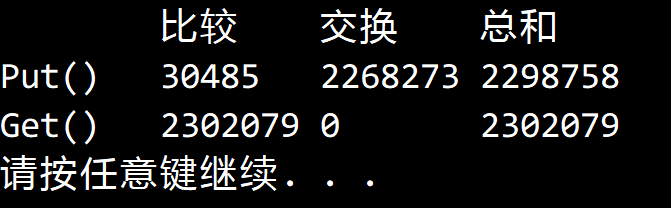

© 2022 《算法（第四版）》C# 题解 | Provided By 沈星繁
搜索解答
目前已完成到 3.2
3.1.27
上次更新：2022-02-18
发现了题解错误/代码缺陷/排版问题？请点这里：如何：提交反馈 。
解答
事实上就是说，先构造一个包含 N 个不重复键的符号表，然后进行 S 次查找。
给出 S 的增长数量级，使得构造符号表的成本和查找的成本相同。
这里假设一次数组交换和一次比较的成本是相同的。
先考虑构造符号表的成本，一次 Put() 需要调用一次 Rank() 和一次插入操作。
2.1 节插入排序的命题 B 给出了每次插入平均需要移动一半的数组元素的结论。
于是构造符号表所需的成本约为：$n\lg n + \frac{1}{2}\sum_{k=1}^{n} k=n\lg n + \frac{n(n-1)}{4} $ 。
这里查找的成本是这么计算的：
查找所需的成本比较简单，一次二分查找的比较次数约为 ，总成本就是 。
令两边相等，解方程即可得到 。
如果用大 O 记法，也可以记为 ，如果要选择一个比较常用的上界则可以选择 。
实验结果，两边的成本是很接近的：
